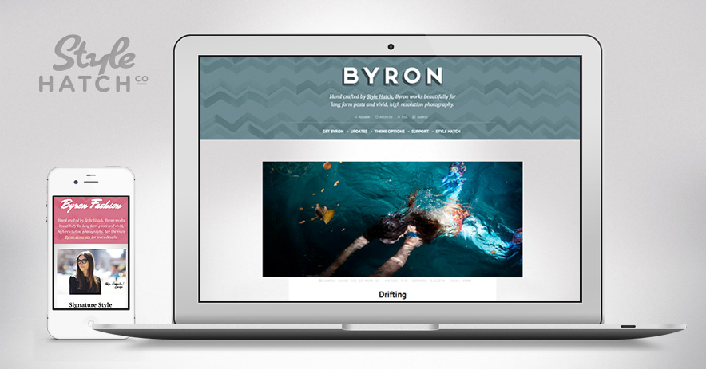

April 2013
04/24/2013 14:15:29
¶
●
The Sound and Music of Oblivion
A SoundWorks Collection interview and behind-the-scenes view with Director Joe Kosinski looking at the sound and music by M83 for the new film “Oblivion”.
Check out previous posts for the videos on Inception and The Social Network.
#sound #case study #film #m83 #oblivion
04/24/2013 14:08:59
¶
●
would i be right in assuming you can not mix video and stills in a single post with soem text on tumblr?
You can certainly do that! There are a number a ways you could pull off a post with text, video and and image in the same post.
- Create a Text post and use the “upload image” icon on the format bar to insert an image. Then click on the HTML icon to paste in the embed code for the video.
- Or you could create a Video or Photo post and add additional images and videos in the caption using the image and HTML buttons on the format bar.
If you have specific questions about one of our Style Hatch themes email us at support@stylehatch.co we have three people on the team ready to answer any questions you might have!
04/24/2013 13:59:11
¶
●
The best way is always to stop when you are going good and when you know what will happen next. If you do that every day … you will never be stuck. Always stop while you are going good and don’t think about it or worry about it until you start to write the next day. That way your subconscious will work on it all the time. But if you think about it consciously or worry about it you will kill it and your brain will be tired before you start.
Ernest Hemingway, on the paralysis that often comes when stopping and restarting projects.
#ideas #action #productivity
04/24/2013 13:52:21
¶
●
Vertical Horizons
A photographic journey between the buildings of a relentlessly growing city. It is a deep immersion into the city’s thick atmospheres and a visual record of its wildly diverse built environment.
Photographer Romain Jacquet-Lagrèze made a point to look up at the geometry and art that the structures surrounding us create. The entire series of images are available in his book Vertical Horizons.
#photography #landscape #architecture
04/22/2013 13:57:05
¶
●

Byron Premium Tumblr Theme
After countless requests for us to create a theme that shines for long-form essays, articles and high-resolution photography we are excited to release Byron. Even though we spent a lot of time on the photo and text posts, every post type has been thoughtfully designed to create one Style Hatch’s most versatile premium themes yet.
From the beginning Byron was designed to be fully responsive so that your blog looks fantastic from the largest resolution screens, all the way down to mobile devices. Go ahead, try it out!
For a slightly softer and more “fashionable” style check out our alternate demo site for Byron Fashion.
#style hatch #Premium themes #themes #responsive
04/17/2013 13:49:53
¶
●


zsultan:
Last week, we retired the blue alien head. New Tumblr users will now get these friendly geometric faces as their default avatar. Adorably, they take their colors from the post type icons.
I love all the playful details that Tumblr builds in and packs away for it’s users.
#design #tumblr
04/15/2013 10:45:21
¶
●
James Nares: “STREET”
61-minutes of people watching shot at 780fps on the Phantom Flex high-speed camera. This is a short clip of the film on display at the Met.
“I wanted the film to be about people. All it needed were magical moments, and there are enough of those happening every moment of any given day.”
—James Nares
See more posts on the Phantom camera.
#phantom #street #culture #nyc
04/15/2013 10:30:59
¶
●
You can close more business in two months by becoming interested in other people than you can in two years by trying to get people interested in you.
Dale Carnegie, from Alex Godin’s post Stop Hustling, Start Listening.
#ideas #business
04/09/2013 10:01:29
¶
●
The idea that, without “hustle,” without throwing away nights and weekends, without putting your life on hold for your work, you’ll somehow be more successful, more productive, is ridiculous to me, yet continues to be pushed by participants in our industry left and right. This is, quite simply, insane.
So, dear reader, I implore you: If this post at all rings true, sounds a little too familiar, do yourself a favor — take a vacation. Get away from your work for a bit. Reset. And when you come back, pick some number under 35 and try working that many hours per week, and no more.
I could not agree more with these words of wisdom from Kyle Bragger. When I left the interactive agency world to start Style Hatch I completely eliminated working on the weekends, on average I work less than 40 hours a week, rely on my team more, and frequent vacations with my family disconnected from work. As a result my time in the office is far more focused and productive when I know that my day ends at 5pm.
Often I’m faced with that nagging urge to go back to putting in 80 hour weeks and out hustling the competition, but I would rather choose a pace that I can stick with for a lifetime while valuing time with my wife and three kids.
Work smarter not harder.
#actions #ideas #work
Index